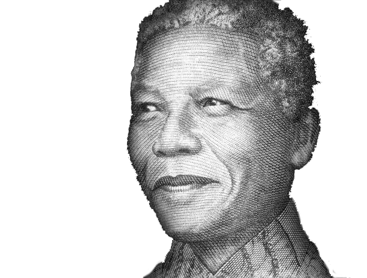

RMIT University Vietnam | Saigon South Campus
S3926746 | Nguyen Hong Khanh Linh
COMM2754
Digital Media Specialisation 1
Semester B | 2025
C
l
l
e
s
Sustainable Development Goal (SDG)

Goal 16
Promote peaceful and inclusive societies for sustainable development, provide access to justice for all and
build effective, accountable and inclusive institutions at all levels
PEACE, JUSTICE AND STRONG INSTITUTIONS
“Our children are our greatest treasure. They are our future. Those who abuse them tear at the fabric of our
society and weaken our nation.”
Nelson Mandela
“Our children are our greatest treasure… Those who abuse them tear at the fabric of our society and weaken our
nation.” Nelson Mandela’s words remind us that child abuse is more than just a personal tragedy—it’s a quiet
force that can destroy entire communities. Under SDG 16—Peace, Justice and Strong Institutions—ending child
abuse is a global priority. Think of society as a living body, and children as its vital cells. When those cells
are damaged, the whole system starts to fail. And if the harm spreads—if hurt children grow up carrying pain,
anger, and fear—we risk a future built on broken foundations.
That’s why we must act now: speak up, protect children early, and create a world where they are safe to grow,
dream, and lead. The cost of silence is far too high.
School of Communication and Design, Digital Media Program
23.07.2025
S3926746
S3927581
S3891537
| Nguyen Hong Khanh Linh
| Nguyen Hoang Minh Phuong
| Pham Ha Hoang Trang
Team members